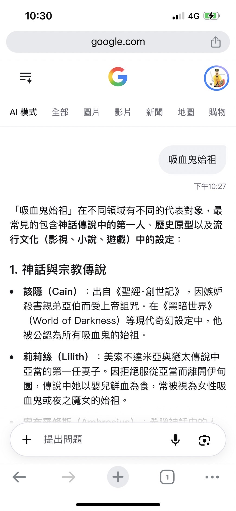
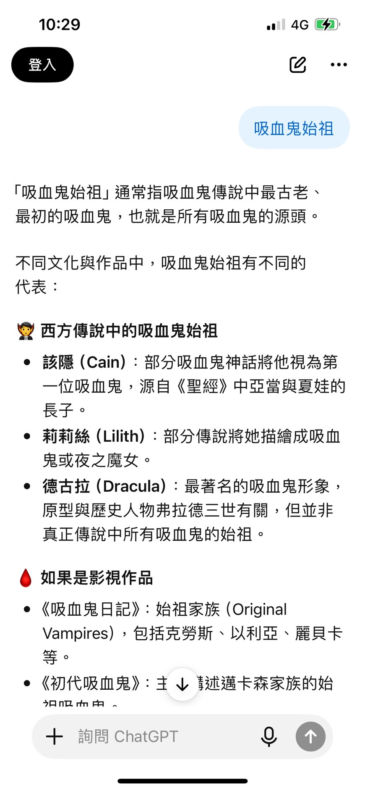

點擊上方的語言選單以切換語言
在當代網路社群、奇幻小說討論區乃至二創同人文中，只要有人問起「世界上第一隻吸血鬼是誰？」，往往會有大批受眾毫不猶豫地回答：「《聖經》裡的該隱（Cain）！因為他殺了弟弟亞伯，被上帝和天使詛咒怕陽光、喝鮮血，所以成了吸血鬼始祖！」許多人甚至將這套說法奉為放諸四海皆準的「吸血鬼界鐵律」，彷彿任何不採用這套設定的作品都是「不專業」或「背離正統」。
然而，只要稍微翻閱宗教史與流行文化史就會發現，這根本是一場近乎完美的集體認知騙局。《舊約聖經·創世記》裡從頭到尾一個字都沒提過吸血鬼、懼怕陽光或吸食人血；所謂「該隱是吸血鬼始祖」，完全是 1991 年美國白狼遊戲（White Wolf）在設計桌上角色扮演遊戲《吸血鬼之避世潛藏》（Vampire: The Masquerade）時才發明的商業二創設定。更關鍵的是，如果我們跳脫一神教的神話濾鏡，改用現代古人類學、體質人類學、分子遺傳學與無神論者的冷靜視角來審視這套設定，就會發現它不僅不是什麼宇宙唯一真理，其底層時間軸與人種邏輯在科學面前更是漏洞百出、完全說不通。
一個 1990 年代才由美國遊戲編劇寫出來的虛構神話，之所以能在短短三十年間成功洗腦全球大量受眾、讓人誤以為它是流傳千年的「正統考據」，背後其實精準踩中了人類認知心理學的三個弱點：
在資訊傳播學中，人類大腦對於「帶有古老年代標籤」與「宗教儀式感」的敘事天生缺乏免疫力。白狼遊戲非常聰明，他們沒有憑空編造一個叫「傑克」或「湯姆」的近代始祖，而是直接挪用西方世界家喻戶曉的《創世記》人物該隱，並偽造了一本充滿古聖經文體的設定集《挪德之書》（Book of Nod）。當受眾看到「上帝耶和華」、「大天使烏列爾」、「諾亞大洪水」這些具有數千年歷史沉澱的宗教符號時，大腦會自動將對古老宗教文本的敬畏感，無條件轉移到這套 1991 年的商業遊戲規則上，進而產生「這一定是自古流傳的吸血鬼正統聖經」的錯覺。
從 19 世紀布萊姆·斯托克的《德古拉》到 20 世紀好萊塢無數吸血鬼電影，西方文化工業早已透過「十字架能灼傷吸血鬼」、「聖水能腐蝕血族」、「吸血鬼是被上帝放逐的受詛咒者」等視覺符號，在大眾潛意識裡刻下了一道深深的條件反射：「吸血鬼的世界觀理所當然存在於基督教神學宇宙之中。」正因為受眾在心理上早已默認「上帝存在、聖經為真」的前提，當該隱神話拋出「上帝詛咒該隱變成第一隻吸血鬼」時，大眾會覺得「邏輯好順暢、完美解釋了吸血鬼為什麼怕十字架」，卻完全沒意識到這個「前提」本身就是一個神學預設的陷阱。
《避世潛藏》作為一款需要計算戰力數值的桌遊，必須建立一套清晰的等級制度（第一代該隱 → 第二代 → 第三代上古者 → 第十三代現代血族）。對人類大腦而言，「萬物皆有單一源頭、所有後代都能畫進同一棵家族樹」的線性思維最容易理解、也最符合封建血統論的直覺。久而久之，這套為了方便算數值而設計的「單一始祖家譜」，便在受眾腦中固化成了不容質疑的教條。
這場認知騙局的影響力甚至一路蔓延到了人工智慧時代。如今只要在主流搜尋引擎的 AI 摘要或大型語言模型（如 ChatGPT）中輸入「吸血鬼始祖」四個字，演算法幾乎都會在第一時間把《聖經》該隱列在「神話與宗教傳說」的首位，甚至寫出「被公認為所有吸血鬼的始祖」這類結論[cite: 1, 2]。這正是典型的「網路語料污染（Data Contamination）」——因為過去三十年中文與英文網路上充斥著大量受《避世潛藏》影響的二創設定文與內容農場，AI 依據詞頻統計抓取資料後，便將一套 1991 年美國商業桌遊編劇寫出來的規則，誤判並背書成了「流傳千年的古代宗教神話」，進一步鞏固了這場集體認知迷思。


如果把「該隱是吸血鬼始祖」當成純粹的奇幻遊戲設定來欣賞，原本無可厚非；但一旦有人把這套設定當成「客觀真理」甚至拿來否定其他科學化或無神論的吸血鬼作品，那麼只要用最基礎的地質學與古人類學時間軸一照，整個神話體系就會瞬間瓦解：
比時間軸更致命的破綻，在於體質人類學（Physical Anthropology）與人種演化遺傳學的硬核鐵律——只要審視該隱的族群屬性與全球主要人種的差異，「全人類與所有血族皆源自該隱一家」的說法就會立刻陷入無法自圓其說的死局：
更令人哭笑不得的是，許多受「該隱始祖論」洗腦的受眾，甚至企圖用這套理論去「統一解釋」全世界所有文化的不死生物——例如硬說東亞的《殭屍先生》跳殭、印度的羅剎或中南美洲的吸血蝙蝠神，全都是「該隱某個孫子跑到東方轉化出來的分支」。
這種思維本質上就是一種典型的「西方神學中心主義（Theocentrism）與文化霸權」：
許多受眾之所以盲信「該隱是吸血鬼始祖」，是因為直覺以為《聖經》創世記裡的該隱已經是「人類時間軸的盡頭」。然而，只要把東西方各類經典吸血鬼作品的「底層起源規則」、「是否依附基督信仰」以及「作品內最古老吸血鬼的真實年紀」並排攤開，就會發現一個殘酷的事實：依照神學年表僅約六千至一萬歲的該隱，在眾多其他世界觀的真正上古血族面前，年紀根本不夠老，甚至只是個晚輩！
| 作品／文化體系 | 吸血鬼起源設定 | 是否與基督信仰有關 | 作品最老吸血鬼年紀 | 底層邏輯屬性 | 科學／無神論視角評估 |
|---|---|---|---|---|---|
| 《我和殭屍有個約會》 (港劇經典宇宙) |
盤古族聖地守護者將臣（本質為不老不死、吸食血液的盤古族紅眼真祖） | 完全無關 （融合盤古神話、佛教宿命與東方奇幻宇宙） |
數萬年至開天闢地級 （遠在人類文明與一神教誕生之前便已存在） |
上古外星／盤古神族血脈 | 時間尺度直接跨越數萬年史前史，完全不受近東六千年神學年表限制，年紀徹底碾壓該隱 |
| 漫威宇宙（Marvel） (刀鋒戰士／德古拉主宇宙) |
約公元前 18,000 年亞特蘭提斯沉沒前夕，由黑暗神書（Darkhold）黑魔法轉化的首位吸血鬼瓦爾內（Varnae） | 完全無關 （源於亞特蘭提斯上古黑魔法與黑暗神書） |
約 20,000 歲 （瓦爾內 Varnae，誕生於約公元前 18,000 年） |
史前文明黑魔法與黑暗維度能量 | 瓦爾內誕生的時間比《創世記》該隱足足早了一萬多年，直接證明西方奇幻本身就有比《聖經》更古老的血族源頭 |
| 《吸血鬼騎士》 (Vampire Knight) |
純血種吸血鬼始祖玖蘭樞（身為玖蘭家真正的始祖，歷經萬年沉睡後甦醒） | 完全無關 （獨立的純血種血族階級與貴族社會體系） |
超過 10,000 歲 （玖蘭樞，活躍於一萬年前的遠古時代） |
超自然純血種血族進化體系 | 早在兩河流域閃米特部落誕生之前，玖蘭樞便已是純血種始祖，該隱的六千多年資歷在他面前完全不夠看 |
| 《獵命師傳奇》 (九把刀奇幻小說) |
史前時代便已出現的吸血鬼病毒感染與演化，大多數原初血族長期隱居於地底世界 | 完全無關 （地底史前血族生態與東方歷史奇幻） |
數萬歲以上 （史前地底原初血族；地表叫得出名字的代表則為逾兩千兩百歲的徐福） |
史前病毒演化與地底世界奇幻 | 早在數萬年前便於地底獨立演化，徹底跳脫西方近東六千年神話年表與《聖經》家族樹束縛 |
| 《吸血鬼之避世潛藏》 (Vampire: The Masquerade) |
《聖經》人物該隱弒弟後遭耶和華與四大天使詛咒，成為第一代吸血鬼始祖 | 高度相關 （直接借殼《舊約·創世記》神學體系） |
僅約 6,000 至 10,000 歲 （該隱，受限於神學六日創世年表上限） |
一神教神學二創神話 （1991 年桌遊規則） |
不僅在古人類學三十萬年演化史與尼格羅／蒙古人種遺傳學面前破產，連比絕對年齡都輸給瓦爾內、玖蘭樞與將臣 |
| 《夜訪吸血鬼》 (Interview with the Vampire) |
古埃及王室遭惡靈「阿卡莎（Akasha）」附身融合，透過血液傳播古老靈體能量 | 基本無關 （起源早於基督教兩千餘年的古埃及靈體） |
約 6,000 歲 （阿卡莎 Akasha 與恩基爾 Enkil，約公元前 4000 年古埃及王室） |
古埃及泛靈論與神秘主義 | 將起源拉回比基督教更古老的古埃及文明，證明即便在歐美哥德文學裡，吸血鬼也完全不需要向《創世記》借殼 |
| 《暮光之城》 (Twilight Saga) |
未設創世神話；本質為「吸血鬼毒液」對人類肉體機能的等比例石質化／生物物理重組 | 完全無關 （無十字架、聖水與上帝懲罰設定） |
約 4,500 多歲 （埃及氏族艾蒙 Amon，生於約公元前 2500 年） |
去神學化生物物理設定 （完全無宗教原罪包袱） |
徹底擺脫宗教神話束縛；戰力不隨年資無限膨脹，反而更符合無神論與硬核物理量級邏輯 |
| 《冰雪謠》 (民國奇幻劇／原著《如月》) |
源於天外隕石能量（外星異星物質）滲入人體後賦予的不死之身與嗜血體質 | 完全無關 （東方民國背景與天外異星物質） |
數百至上千歲 （男主角沈之衡等受天外隕石影響的不死血族） |
外星物質能量與東方民國奇幻 | 展現華語奇幻對不死生物的獨立想像，以「天外物質」取代西方上帝詛咒，證明東方人種同樣能建構自洽的血族宇宙 |
| 《彼岸島》 (松本光司漫畫) |
孤島上存在名為「吸血鬼病毒」的病原體，透過體液與血液感染人類並引發高傳染性變異 | 完全無關 （日本封閉離島生態與病原體突變） |
約數百歲 （雅、五十嵐等封閉島嶼世代感染者） |
封閉島嶼流行病學與病原體變異 | 與西方宗教原罪毫無關聯，純粹以病毒傳染鏈與生物突變解釋吸血鬼族群的擴張與異化 |
| 《吸血鬼醫生》 (Blood / 韓劇) |
由名為 VBT-01 的未知變異病毒感染人類後引發的基因突變與嗜血生理狀態 | 完全無關 （純粹現代醫院與基因實驗室架構） |
數十至百餘歲 （現代病毒感染者世代，無千年神話老祖） |
現代病毒學與臨床醫學科幻 | 最貼近現代無神論與生物醫學視角，將吸血鬼還原為可被實驗室研究、抗病毒藥物抑制的病理變異 |
審視完這場圍繞著「該隱始祖論」的認知迷思，我們不難發現，流行文化裡最危險的盲點，往往不是作品本身的虛構，而是受眾「把某一套商業作品的內部設定，誤當成全宇宙的客觀公理」。
《吸血鬼之避世潛藏》借用該隱建構了一座宏大且極具戲劇張力的哥德龐克遊戲宇宙，這在桌遊設計史上無疑是成功的；但當我們站在無神論者、演化生物學與體質人類學的堅實地面上回望時，必須清醒地指出：在一個有著三十萬年智人演化史、孕育出撒哈拉以南尼格羅人種、東亞蒙古人種與歐洲高加索人種的真實地球上，一個受限於神學創世年表、年紀僅約六千多歲的兩河流域閃米特農夫（甚至遠比不上漫威兩萬歲的瓦爾內、一萬歲的玖蘭樞或盤古族的將臣古老），永遠不可能成為全人類與所有超自然生物的唯一始祖。